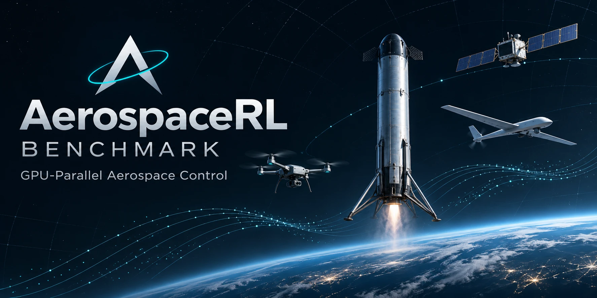

经典基线 99.2%
Quadrotor · URDF rigid body
QuadX-Waypoints
Crazyflie 2.x 四旋翼穿越 4 个航点，位置级联 + 速率内环。
- obs 37 → act 4
- 40 Hz
- 800 steps / 20 s
- waypoints < 0.2 m

下方每一格都是仓库内实际渲染的回合回放（点击播放）。角标是经典基线的参考成功率， 取自各任务随仓库发布的 baseline_eval 结果。黄色标注用于提示未达到 100% 的参考结果；各任务的评测窗口和副本数不同，不能直接横向排名。
Crazyflie 2.x 四旋翼穿越 4 个航点，位置级联 + 速率内环。
几何相机跟踪地面运动目标，KF + SE(3) 保持固定偏移。
2.35 kg 固定翼在 20–65 m 壳层内捕获 4 个航点，含失速气动。
四旋翼 + 固定翼翼面 + 前推电机，控制权随空速在旋翼与气动面之间自然转移。
F9 级助推器动力下降：栅格舵 + 万向节 + 可复燃发动机，v2 判据要求连续停稳 2 秒。
150 kg 导弹尾翼气动 + 助推-滑翔发动机，拦截三维机动目标。
4/6 个 CMG 的姿态机动，四元数 PD + 阻尼伪逆控制分配。
二体引力 + 三轴 10 mN 电推进，约 5 圈内完成轨道要素转移。
Clohessy–Wiltshire–Hill 动力学下的近场对接，含燃料约束与安全盾。
远场接近与保持，CWH 双脉冲 ZEM/PN 递归重解，需满足禁飞区约束。
三段特写回放：四旋翼轨迹、对接接近段、火箭着陆末段。视频由仓库内检查点回放导出， 与上方基线成功率使用同一套环境与判据。
航点序列、速度包线与机体姿态同步回放。
相对距离、接近速度与对接轴对齐的末段过程。
点火、制动、触垫与 2 秒停稳窗口。
设计目标是把“环境”做成一个可被审阅的张量内核，而不是一组 Python 对象。 所有物理、接触、奖励、重置与随机数都作用在同一个设备上的掩码张量； 失活的副本被冻结，不消耗随机数，也不参与任何归约。
没有 per-replica 引擎往返，也没有 gym.Env 包装。每个 step() 只有一次主机同步用于回合边界记账。
SE(3)、L1+TECS、PDG、CWH-LQR、双脉冲制导等基线直接输出与策略相同的动作，可独立评测或作为 BC 示范。
仓库内提供 experiments/controller_priors：BC 热启动、残差 RL、增益调度的可复现对比，含 DAgger 采集与检查点选择。
下表为仓库随附的参考结果（单种子、首回合口径，具体窗口见各任务 results/<task>/baseline.json）。各行使用不同的副本数与评测窗口，完整条件请参阅 README；固定翼记录的评测尚未覆盖完整时限。
| 任务 | 经典基线 | 参考成功率 | 备注 |
|---|---|---|---|
| QuadX-Waypoints | SE(3) geometric control | 90.6% | 级联 PID 参照 99.2% |
| QuadX-Track | KF + fixed-offset SE(3) | 82.8% | 可见时间 90.2%，偏移误差 0.258 m |
| Fixedwing-Waypoints | L1 lateral + TECS | 97.0% | out-of-bound 末端极限环 |
| Quadplane-VTOL | SE(3) + forward pusher | 89.1% | 混合级联 / L1-wing 臂 26.6% / 49.6% |
| Rocket-Landing | ZEM/PN PDG + pulse servo | 100% | v2：40 Hz，连续停稳 2 s |
| Missile-Intercept | Augmented PN (N=15) | 71.1% | 体轴角速率指令 |
| Satellite (CMG) | quaternion PD + damped pinv | 100% | 普通 Moore–Penrose 臂同样 100% |
| Low-Thrust Transfer | Gauss one-step greedy | 100% | 166 步，终端返回 0.0067 |
| Space Docking | CWH discrete LQR + shield | 100% | 263 步窗口 |
| Space Rendezvous | two-impulse CWH ZEM/PN | 100% | 581 步窗口，平均返回 184.9 |
口径提醒：火箭 v2 判据（40 Hz + 连续 2 秒停稳）与旧的 v1 瞬时成功率不可直接比较； 旧笔记中的 82.8% / 84.1% 属于 v1 瞬时口径。
每个任务都有自包含的训练入口（参数硬编码在文件里，无 CLI 参数）， 以及统一的基线评测与检查点评测脚本。
# 1. clone & install
git clone https://github.com/PaoShou-China/aerospace-rl-benchmark
cd aerospace-rl-benchmark
pip install -r requirements.txt
# 2. train a task (per-task, self-contained constants)
python environments/multirotor/train_quadx.py
python environments/vtol/train_quadplane.py
# 3. evaluate a checkpoint
python scripts/eval.py quadx
# 4. evaluate the classical baseline
python scripts/baseline_eval.py quadx
# 5. controller-prior study (BC / residual / gain scheduling)
ls experiments/controller_priors